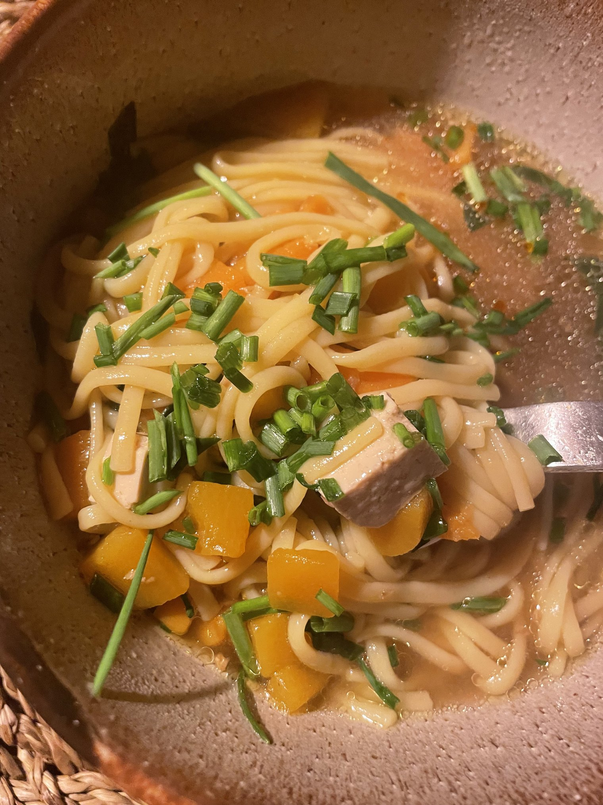

Sopa de fideos con tofu y calabaza
Ingredients
2×
- 1 l de caldo de verduras
- 250 g de calabaza
- 150 g de fideos de trigo (udon)
- 150 g de tofu
- 1 cda de miso
- cebollino

Preparación
Paso 1
Calentar 1 l de caldo de verduras y cocer 250 g de calabaza en dados 10min.
Paso 2
Añadir 150 g de fideos de trigo (udon) y 150 g de tofu en dados y cocer hasta que los fideos estén hechos.
Paso 3
Disolver 1 cda de miso en un poco de caldo, añadirlo fuera del fuego y servir con mucho cebollino picado.